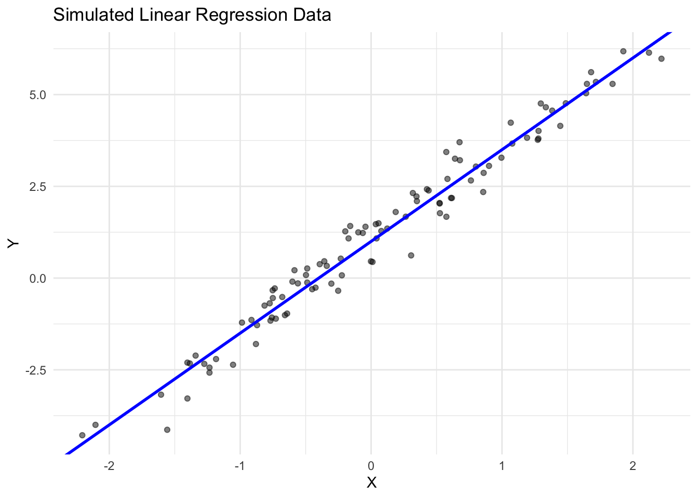
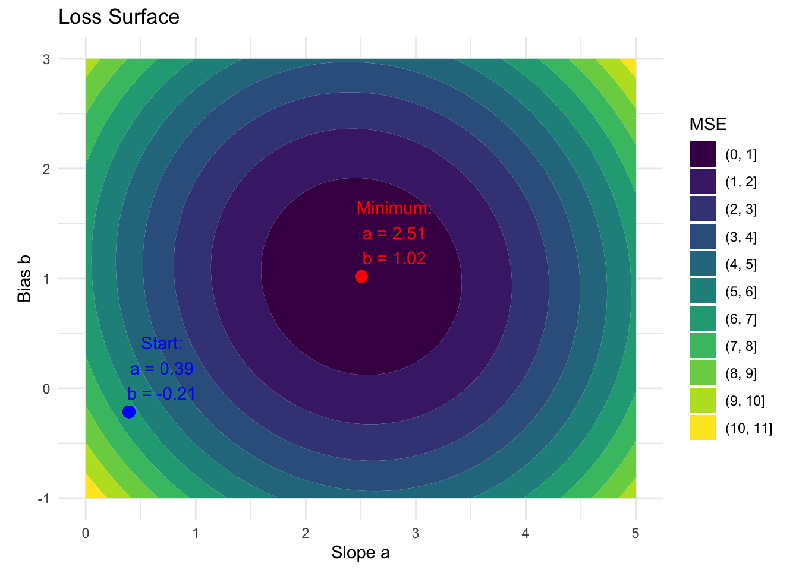
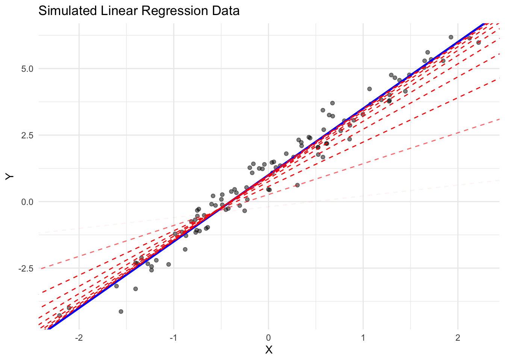
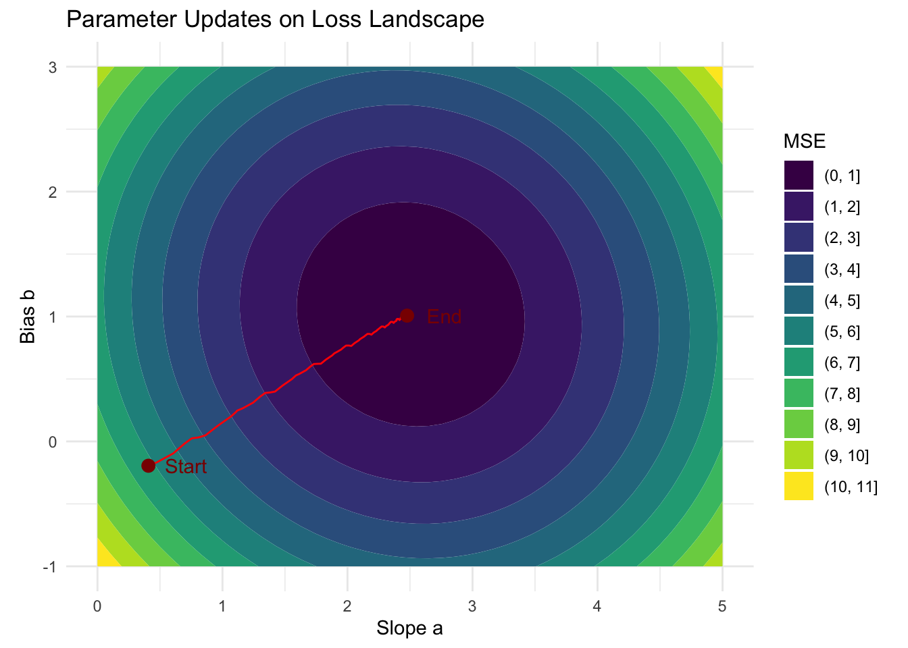

library(torch)
a <- torch_tensor(2, requires_grad = TRUE)
a$requires_grad[1] TRUEb <- torch_tensor(1, requires_grad = TRUE)
x <- torch_tensor(3)Automatic differentiation (autograd) is one of torch’s key features, enabling the automatic computation of gradients for optimization tasks like training neural networks. Unlike numerical differentiation, which approximates gradients using finite differences, autograd computes exact gradients by tracking operations as they are performed and automatically applying the chain rule of calculus. This makes it possible to efficiently compute gradients of complex functions with respect to many parameters—a critical requirement for training modern neural networks.
Autograd works by building a dynamic computational graph of operations, where each node represents a tensor and each edge represents a mathematical operation.
Why do we need automatic differentiation?
In deep learning, training a model requires iteratively updating parameters to minimize a loss function, which measures the difference between predictions and actual data. These updates depend on calculating gradients of the loss with respect to model parameters, information used by optimization algorithms like stochastic gradient descent (SGD). Automatic Differentiation eliminates the need to manually derive these gradients, which is error-prone.
To use autograd, tensors must have their requires_grad field set to TRUE. This can either be set during tensor construction or changed afterward using the in-place modifier $requires_grad_(TRUE). In the context of deep learning, we track the gradients of the weights of a neural network. The simplest “neural network” is a linear model with slope \(a\) and bias \(b\) and a single input \(x\).
The forward pass is defined as:
\[\hat{y} = a \times x + b\]
We might be interested in how the prediction \(\hat{y}\) changes for the given \(x\) when we change the weight \(a\) or the bias \(b\). We will later use this to adjust the weights \(a\) and \(b\) to improve predictions, i.e., to perform gradient-based optimization. To write down the gradients, let \(u = a \times x\) denote the intermediate tensor from the linear predictor.
Weight \(a\):
This is expressed by the gradient \(\frac{\partial \hat{y}}{\partial a}\). We can compute the derivative using the chain rule as:
\[\frac{\partial \hat{y}}{\partial a} = \frac{\partial \hat{y}}{\partial u} \cdot \frac{\partial u}{\partial a} = 1 \cdot x = x\]
Bias \(b\):
\[\frac{\partial \hat{y}}{\partial b} = 1\]
[1] TRUEWe can use the weights and input to perform a forward pass:
When you perform operations on tensors with gradient tracking, torch builds a computational graph on the fly. In the figure below:
graph TD
a[a] --> mul[Multiply]
x[x] --> mul
mul --> u[u]
u --> add[Add]
b[b] --> add
add --> y[y]
%% Gradient flow
y_grad[dy/du = 1, dy/db = 1] -.-> y
u_grad[du/da = x] -.-> u
a_grad[dy/da = x] -.-> a
b_grad[dy/db = 1] -.-> b
%% Styling
classDef input fill:#a8d5ff,stroke:#333
classDef op fill:#ffe5a8,stroke:#333
classDef output fill:#a8ffb6,stroke:#333
classDef grad fill:#ffa8a8,stroke:#333,stroke-dasharray:5,5
classDef intermediate fill:#d5a8ff,stroke:#333
classDef nograd fill:#e8e8e8,stroke:#333
class a,b input
class mul,add op
class y output
class u intermediate
class y_grad,u_grad,a_grad,b_grad grad
class x nograd
Each intermediate tensor knows how to calculate gradients with respect to its inputs.
To calculate the gradients \(\frac{\partial y}{\partial a}\) and \(\frac{\partial y}{\partial b}\), we can traverse this computational graph backward, invoke the differentiation functions, and multiply the individual derivatives according to the chain rule. In torch, this is done by calling $backward() on y. Note that $backward() can only be called on scalar tensors. Afterwards, the gradients are accessible in the $grad field of the tensors a and b:
torch_tensor
3
[ CPUFloatType{1} ]torch_tensor
1
[ CPUFloatType{1} ]Note that only tensors with $requires_grad set to TRUE store their gradients. For the intermediate value u, no gradient is stored.
When you want to perform an operation on tensors that require gradients without tracking this specific operation, you can use with_no_grad(...).
In the next section, we will show how we can use gradients to train a simple linear model.
We can use autograd to fit a simple linear regression model. Let’s first generate some synthetic data:

First, we randomly initialize our parameters a and b.
To optimize the parameters \(a\) and \(b\), we need to define the Loss Function that quantifies the discrepancy between our predictions \(\hat{y}\) and the observed values \(Y\). The standard loss for linear regression is the L2 loss:
\[ L(y, \hat{y}) = (y - \hat{y})^2\]
The graphic below visualizes the relationship between the parameters \(a\) and \(b\) with the average L2 loss over all datapoints, i.e., the Mean Squared Error (MSE). For parameters \(a\) and \(b\) that are on the same contour line, the same loss is observed. The color gradient indicates the magnitude of the MSE. In this case, lighter values mark areas with higher loss, and darker values mark areas with lower loss. The red point marks the minimum loss, while the blue point shows the starting values of the parameters.

We can optimize the parameters \(a\) and \(b\) to converge to the minimum by using gradient descent. Gradient descent is a fundamental optimization algorithm that helps us find the minimum of a function by iteratively moving in the direction of steepest descent.
The gradient of a function points in the direction of the steepest increase—like pointing uphill on mountainous terrain. Therefore, the negative gradient points in the direction of the steepest decrease—like pointing downhill.
Gradient descent uses this property to iteratively:
Note that the gradient only tells us in which direction we have to go, not how far. The length of the step should not be:
The general update formula for the weights \(a\) and \(b\) is:
\[a_{t+1} = a_t - \eta \frac{\partial L}{\partial a_t}\] \[b_{t+1} = b_t - \eta \frac{\partial L}{\partial b_t}\]
where \(\eta\) is the learning rate, and \(L\) is the loss function.
In practice, when dealing with large datasets, computing the gradient over the entire dataset can be computationally expensive. Instead, we often use Stochastic Gradient Descent (SGD), where the gradient is estimated using only a few observations (a so called ‘batch’), but more on that later.
We start by implementing a single gradient step. Note that if we repeatedly call loss$backward(), the gradients in a and b would accumulate, so we set them to 0 before performing the update. The return value of the update will be the parameter values and the loss so we can plot them later. Also, note that we mutate the parameters a and b in-place (suffix _).
update_params <- function(X_batch, Y_batch, lr, a, b) {
# Perform forward pass, calculate loss
Y_hat <- X_batch * a + b
loss <- mean((Y_hat - Y_batch)^2)
# Calculate gradients
loss$backward()
# We don't want to track gradients when we update the parameters.
with_no_grad({
a$sub_(lr * a$grad)
b$sub_(lr * b$grad)
})
# Ensure gradients are zero
a$grad$zero_()
b$grad$zero_()
list(
a = a$item(),
b = b$item(),
loss = loss$item()
)
}library(data.table)
# Hyperparameters
lr <- 0.02
epochs <- 10
batch_size <- 10
# Split data into 10 batches of size 10
batches <- split(sample(1:100), rep(seq_len(batch_size), length.out = 100))
history <- list()
for (epoch in seq_len(epochs)) {
for (step in 1:10) {
result <- update_params(X[batches[[step]]], Y[batches[[step]]], lr, a, b)
history <- append(history, list(as.data.table(result)))
}
}
history = rbindlist(history)This example demonstrates how we can use torch’s autograd to implement gradient descent for fitting a simple linear regression model. The dashed red lines show the progression of the model during training, with increasing opacity for later steps. The blue line represents the true relationship.

We can also visualize the parameter updates over time:

Of course, better solutions exist for estimating a simple linear model, but this example demonstrates how we can utilize an autograd system to estimate the parameters of a model.